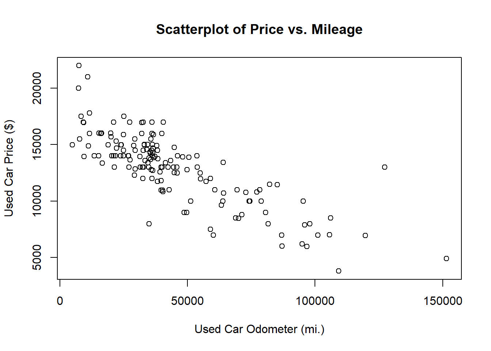

usedcars <- read.csv("usedcars.csv", stringsAsFactors = FALSE)Introduccion_al_aprendizaje_automatico
Resumen 1
INTRODUCCIÓN AL APRENDIZAJE AUTOMÁTICO
Enseñar a una computadora es una tarea que se encuentra ligada a que ella aprenda a jugar, responder preguntas triviales o que reflexione sobre filosofía. Mientras que el aprendizaje automático se asemeja a entrenar en algo a un empleado y no a criarlo desde que es un niño. Después de esta breve introducción sobre el capítulo, en el mismo se tratarán varios temas como: • Los orígenes y las aplicaciones prácticas del aprendizaje automático • Cómo las computadoras definen y representan el conocimiento • Los conceptos básicos que diferencian los enfoques del aprendizaje automático
Los orígenes y las aplicaciones prácticas del aprendizaje automático
Desde que un ser humano nace comienza a recibir e interpretar datos por medio de sus sentidos, el cerebro procesa esta información en forma de sonidos, olores, imágenes, entre otros y da una respuesta. Durante muchos años los encargados de registrar y dar respuestas a distintos datos y estadísticas eran los seres humanos, pero en la actualidad este proceso se a vuelto autónomo y rápidos en donde una computadora realiza todo el proceso y los guarda en bases de datos. La creación de sensores a contribuido a que se pueda aumentar la calidad y la cantidad de datos registrados y procesados, lo que ha facilitado que gobiernos, empresas e industrias obtengan cualquier tipo de datos de manera más rápida y fácil. En la actualidad nos encontramos en la denominada era Big Data, aunque siempre han existido gran cantidad de datos, lo que caracteriza a esta era es la accesibilidad que tiene cada persona para interactuar y usar los registros de datos. El aprendizaje automático es un campo que tiene el objetivo de desarrollar algoritmos de trasformación de datos a acciones, además que la minería de datos se basa en recolectar distintas bases y registros de datos y convertirlos en información novedosa, estos dos campos, aunque se complementan, tiene la diferencia que el primero se enfoca solo en realiza una tarea conocida, mientras que el otro busca pepitas de información ocultas.
Usos y abusos del aprendizaje automático
El aprendizaje automático tiene como objetivo dar sentido o respuesta a los datos complejos, esta misión es aplicable a distintos campos y se utiliza en distintos casos:
• Predecir los resultados de las elecciones.
• Identificar y filtrar los mensajes de spam del correo electrónico.
• Prever la actividad delictiva.
• Automatizar las señales de tráfico de acuerdo con las condiciones de la carretera.
• Producir estimaciones financieras de tormentas y desastres naturales.
El procedimiento del aprendizaje automático genera algoritmos que identifiquen distintos patrones para cumplir con una acción especifica, un ejemplo de esto es donde un minorista utilizó el aprendizaje automático para identificar a mujeres embarazadas para enviarles cupones específicos, basados en los patrones que ellas seguían como las compras de vitaminas prenatales, lociones y toallitas. El minorista tenía el objetivo de que las futuras madres fueran clientes leales que compraran artículos rentables como pañales, fórmula y juguetes. Esto es una práctica que normalmente los minoristas realizan en donde ellos acceden a las transacciones de sus clientes y utilizando el método del aprendizaje automático generan publicidad, promociones, entre otros. Este método también utiliza los sitios web donde ellos utilizan los datos de navegación, para conocer los intereses de los usuarios y mandar anuncios y recomendaciones. Con este método se sugiere que se tome en cuenta las implicaciones éticas del uso de datos de los usuarios.
Consideraciones éticas
El aprendizaje automático es un campo joven el cual está en constante evolución, lo que provoca que legalmente y socialmente su desarrollo sea incierto, por tal motivo el acceder a distintos datos tiene que ser bajo mucha precaución para no incurrir en la violación de ninguna ley, abusando de la confianza de usuario, dejando de lado los términos de servicio que se ofrece y sobrepasando la privacidad de los clientes. Las consecuencias legales por mal uso de datos pueden llegar a desestimar un proyecto, además de provocar en los clientes una inconformidad e incomodidad sobre su privacidad sintiéndose expuestos. El cambio de acuerdos de servicio puede llegar a provocar la perdida de usuarios por ir en contra de los acuerdos iniciales, la privacidad varía según el contexto, la edad o el lugar en donde una persona acepta los servicios, lo que provoca que se deba considerar los distintos factores de la sociedad para utilizar los datos de una manera u otra.
¿Cómo aprenden las máquinas?
El proceso de aprendizaje se divide en tres componentes básicos, aunque la definición formal de aprendizaje automático de Tom M. Mitchell es precisa, no llega a explicar cómo los datos se transforman en conocimiento procesable. El uso inapropiado de los registros de datos llega a afectar a las respuestas que se entregan y a la privacidad de los usuarios. Las tres fases son: • Entrada de datos: utiliza la observación, el almacenamiento de memoria y el recuerdo para proporcionar una base fáctica para un razonamiento posterior. • Abstracción: Implica la traducción de datos en representaciones más amplias. • Generalización: utiliza datos abstractos para formar una base para la acción.
El proceso de aprendizaje es más que solo memorizarse parámetro, preguntas y respuestas. Un ejemplo de esto es el estudio para un examen, en lugar de tratar de memorizar cada pregunta que se de en un banco, es mejor ir comprendiendo cada uno de los temas para sacar mejor calificación. Además, los tres componentes del aprendizaje se encuentran vinculados entre sí y aunque estos no suceden de manera consiente en los humanos, por otro lado, en las computadoras se ejecutan de manera explícita lo que ayuda en su utilización en un futuro.
Abstracción y representación del conocimiento
La representación de datos que entran de manera estructurada y sin procesar es una de las principales tareas que debe ejecutar un algoritmo de aprendizaje. Antes de pasar por un procesamiento los datos son solo unos y ceros en un disco o en la memoria; no llegan a formar ninguna forma o tienen un significado. Para dar un significado a los mismos estos deben entrar en un proceso denominado de abstracción. Un ejemplo de la conexión entre las ideas y la realidad se observa en la famosa pintura de René Magritte: La traición, que es la imagen que se observa en la figura dos.
La pintura representa una pipa de tabaco con la leyenda Ceci n’est pas une pipe (“esto no es una pipa”). El punto que Magritte ilustraba es que una pipa no es realmente una pipa, en donde el autor puede impregnar la idea de que la imagen representa una tubería, aunque esta no es real, lo que sugiere que las mentes de los observadores pueden conectar la imagen de una tubería con la idea de una tubería, que luego puede ser conectado a una tubería real que podría sostenerse en la mano. Las conexiones abstraídas como la del ejemplo son una base de la representación del conocimiento, en donde la formación de estructuras lógicas ayuda a convertir la información sensorial sin procesar en una percepción significativa. Existen varios tipos de modelos. Por ejemplo:
• Ecuaciones
• Diagramas como árboles y gráficos
• Reglas lógicas if/else
• Agrupaciones de datos conocidas como clusters La elección del modelo por lo general la realiza el usuario y no se deja que la máquina elija, en donde el modelo a elegir debe tener en consideración la tarea de aprendizaje y el tipo de datos que se analizan. Entrenamiento es el proceso de ajustar un modelo a un grupo de datos, el ser humano es el que impone el aprendizaje autónomo a la máquina. El entrenamiento se encarga de transformar de manera abstracta los datos resumiendo la información original. Esto se ilustra con el ejemplo del descubrimiento de la gravedad por Sir Isaac Newton, quien ajustó ecuaciones a datos de observación para deducir el concepto de gravedad.
La mayoría de los modelos no llega a generar teorías que revolucionen el pensamiento científico, esto puede ayudar para entender las relaciones entre los datos que no son visibles, por ejemplo, un modelo entrenado con datos genómicos podría identificar combinaciones de genes responsables de ciertas enfermedades, o los bancos podrían detectar patrones de transacciones antes de actividades fraudulentas. Siguiendo esta idea los psicólogos también podrían identificar nuevas combinaciones de características que indican trastornos. Los modelos permiten llegar a dar soluciones de distintas maneras, lo que puede revelar conexiones previamente desconocidas. La generalización del aprendizaje se utiliza para tomar acciones futuras, pero esto tiene varias complicaciones como son las relaciones subyacentes y modelos. Por ejemplo, la disponibilidad podría explicar por qué la gente tiene más miedo a volar que a conducir, aunque los accidentes de tráfico son más comunes, pero menos publicitados. Existe un potencial de las heurísticas para dar lugar a conclusiones ilógicas, como la falacia del jugador que puede resultar de la aplicación errónea de la heurística de representatividad. También se menciona que los algoritmos de aprendizaje automático pueden estar sesgados si sus heurísticas no son precisas, como en el caso de un algoritmo que aprendió a identificar caras basándose en un modelo específico y tiene problemas con rostros que no se ajustan a ese modelo.
Evaluar el éxito del aprendizaje
El sesgo en el aprendizaje automático se convierte en algo importante para el proceso de generalización, donde cada modelo tiene sus debilidades y se encuentra sesgado de manera particular. El paso final en el proceso de generalización es comprobar si funciona el modelo a a pesar de sus sesgos. Luego se prueba con datos nuevo y se compara con los valores de los datos del entrenamiento y se generaliza a los nuevos datos. Un problema para que no se generalicen todos los datos es por el ruido o variaciones inexplicables en los datos. Los datos ruidosos son generados de manera aleatoria por:
• Error de medición debido a sensores imprecisos que a veces suman o restan un poco de la lectura.
• Problemas con los datos de informes, como que los encuestados informen respuestas aleatorias a las preguntas de la encuesta para terminar más rápido.
• Errores causados cuando los datos se registran incorrectamente, incluidos faltantes, nulos, valores truncados, codificados incorrectamente o corruptos.
Tratar con los ruidos dentro de los datos siempre lleva a realizar calibraciones dentro de los modelos, donde este se ajusta demasiado a los datos de entrenamiento, pero ya no generaliza a los nuevos datos, explicar un ruido lleva a tener errores más complejos y no se identifica el patrón real.
Pasos para aplicar el aprendizaje automático a sus datos
Las tareas de aprendizaje automático se pueden dividir en los siguientes pasos:
1. Recopilación de datos: ya sea que los datos estén escritos en papel, registrados en archivos de texto y hojas de cálculo, o almacenados en una base de datos SQL, deberá recopilarlos en un formato electrónico adecuado para el análisis. Estos datos servirán como material de aprendizaje que utiliza un algoritmo para generar conocimiento procesable
2. Explorar y preparar los datos: la calidad de cualquier aprendizaje automático mejora del rendimiento del modelo: si se necesita un mejor rendimiento, se hace necesario utilizar estrategias más avanzadas para aumentar el rendimiento del modelo. A veces, puede ser necesario cambiar a un tipo de modelo completamente diferente. Es posible que deba complementar sus datos con datos adicionales o realizar un trabajo preparatorio adicional como en el paso dos de este proceso. proyecto se basa en gran medida en la calidad de los datos que utiliza. Este paso en el proceso de aprendizaje automático tiende a requerir una gran cantidad de intervención humana. Una estadística citada a menudo sugiere que el 80 por ciento del esfuerzo en el aprendizaje automático se dedica a los datos. Gran parte de este tiempo se dedica a aprender más sobre los datos y sus matices durante una práctica llamada exploración de datos.
3. Entrenamiento de un modelo sobre los datos: Para cuando los datos hayan sido preparados para análisis, es probable que tenga una idea de lo que espera aprender de los datos. La tarea específica de aprendizaje automático informará la selección de un algoritmo apropiado, y el algoritmo representará los datos en forma de modelo.
4. Evaluación del rendimiento del modelo: debido a que cada modelo de aprendizaje automático da como resultado una solución sesgada del problema de aprendizaje, es importante evaluar qué tan bien aprendió el algoritmo a partir de su experiencia. Según el tipo de modelo utilizado, es posible que pueda evaluar la precisión del modelo mediante un conjunto de datos de prueba o que necesite desarrollar medidas de rendimiento específicas para la aplicación prevista.
5. Mejora del rendimiento del modelo: si se necesita un mejor rendimiento, se hace necesario utilizar estrategias más avanzadas para aumentar el rendimiento del modelo. A veces, puede ser necesario cambiar a un tipo de modelo completamente diferente. Es posible que deba complementar sus datos con datos adicionales o realizar un trabajo preparatorio adicional como en el paso dos de este proceso.
Al terminar con estos pasos de manera correcta, y verificando que el modelo funciona se puede proceder a implementar la tarea prevista. Según los datos que se estén procesando el modelo se puede utilizar para proporcionar datos de puntuación para predicciones (posiblemente en tiempo real), para proyecciones de datos financieros, para generar información útil para marketing o investigación.
Elegir un algoritmo de aprendizaje automático
Elegir un algoritmo de aprendizaje automático implica tener que realizar un procedimiento en donde se tengan que hacer coincidir las distintas características de los datos con los sesgos de los enfoques disponibles. Esta elección depende del tipo de datos que se manejen y de la tarea propuesta, a menudo es útil pensar en este proceso mientras recopila, explora y limpia sus datos.
Pensando en los datos de entrada
Los algoritmos de aprendizaje automático siempre van a necesitar de datos iniciales, como son ejemplos y características. Los ejemplos son los conceptos que se va a aprender y estos pueden ser biopsias de pacientes, etc. En donde la unidad de observación va a describir los que se mide y sus unidades. Las características por otro lado son atributos que sirven para aprender el concepto y pueden tener palabras en mensajes de correo electrónico o datos genómicos de células de biopsia. La siguiente hoja de cálculo muestra un conjunto de datos en formato de matriz, lo que significa que cada ejemplo tiene la misma cantidad de características. En los datos de matriz, cada fila de la hoja de cálculo es un ejemplo y cada columna es una característica. Aquí, las filas indican ejemplos de automóviles, mientras que las columnas registran varias características de los automóviles, como el precio, el kilometraje, el color y la transmisión. Los datos en formato de matriz son, con mucho, la forma más común utilizada en el aprendizaje automático, aunque, como verá en capítulos posteriores, otras formas se utilizan ocasionalmente en casos especializados.
A las características que son medidas por números se las conocen como numéricas. Si se mide un atributo y este está representado por un conjunto de categorías, se lo llama categórica o nominal. Dentro de este grupo existe un caso especial al que se le llama ordinal. Algunos ejemplos de variables ordinales incluyen tallas de ropa como pequeña, mediana y grande, o una medida de la satisfacción del cliente en una escala del 1 al 5. Exige dos tipos de modelos utilizados en el análisis de datos: los modelos predictivos y los modelos descriptivos, los primeros se utilizan para predecir valores numéricos mediante el ajuste de modelos de regresión lineal, y los segundos se utilizan para descubrir patrones en los datos mediante el aprendizaje no supervisado. La tabla enumera varios tipos de algoritmos, incluyendo árboles de regresión, agrupación de k-medias, máquinas de vectores de soporte, redes neuronales, árboles de decisión, reglas de asociación, y algoritmos de aprendizaje supervisado y no supervisado. La siguiente tabla enumera los tipos generales de algoritmos de aprendizaje automático que se tratan en este libro, cada uno de los cuales puede implementarse de varias maneras.
Para que coincida una tarea con un enfoque de aprendizaje automático, se necesita identificar el tipo de tarea, su clasificación, predicción numérica, detección de patrones o agrupación. La elección del algoritmo dependerá de la tarea y de las fortalezas y debilidades de cada enfoque. Si es una clasificación lo importantes es como se interpreta el modelo, para usar R se requiere tener los paquetes que son gratuitos en donde se encuentran los algoritmos que se necesitan para realizar las distintas tareas.
EXPLORACIÓN Y COMPRENSIÓN DE DATOS
Después de que se recopilo los datos, haberlos cargado en estructura de datos de R, debemos de examinar los datos, explorando sus características y sus ejemplos, detallando las cosas que hacen que estos datos sean únicos.
Los datos se llegan a almacenar en formato csv, debemos utilizar read.csv() para cargar los datos en un marco de datos.
Las preguntas pueden variar entre proyectos, pero estas siempre llegaran a ser similares.
Explorando la estructura de los datos
Lo primero que debemos tomar en cuenta en una investigación es saber cómo debemos organizar datos, muchas de las veces la fuente nos proporcionará un diccionario de datos en el cual también obtendremos un documento que describe las características de los datos, en el caso de un coche usado este no viene con la documentación, por lo que se tiene que crear.
La función str() proporciona una forma de mostrar la estructura de un marco de datos o cualquier estructura de datos R, incluidos vectores y listas. Esto se puede usar para crear un esquema básico para nuestro diccionario de datos:
El conjunto de datos de usedcars, el número de observaciones se abrevia con n y se llega a entender que existen 150 ejemplos de automóviles usados a la venta, se registran 6 variables en los datos que quiere decir que son 6 características del automóvil, se puede explorar diferentes detalles adicionales.
Características de color en datos: Después del nombre de variable, chr nos dice que la función es de tipo carácter, las tres varibales de indican como int, lo que nos indica el tipo de número entero, este conjunto solo incluye variables de caracteres y enteros, es posible que en otros conjuntos como num se encuentren variables numéricas o en tipo factor los de factores. R no indica una secuencia de primeros valores de cada característica después de indicarnos su tipo, también nos llega a mencionar las características como su color: “Amarillo”, “Gris”, “Plata” y “Gris”.
Explorando variables numéricas
Para investigar las variables numéricas en los automóviles usados, se emplearan conjunto de medidas comunes para describir los valores conocidos como estadísticas de resumen, la función summary() muestra las variables estadísticas de resúmenes comunes.
El encabezado de la salida de la función summary() nos puede guiar en las estadísticas de resumen de datos. En el caso de nuestro ejemplo anterior los datos serian los numero 2000, 2008, … estos nos indican que la variable se trata del “año” de fabricación de los vehículos ya que estos salieron a la venta recientemente.
También se puede utilizar la función summary () para obtener estadísticas de resumen de varias variables numéricas al mismo tiempo.
Las seis estadísticas de resumen proporcionadas por la función summary() son herramientas simples pero poderosas para examinar datos. Las estadísticas resumidas se pueden dividir en dos tipos: medidas de centralidad y medidas de dispersión.
La medición de la tendencia central: media y mediana son una clase de estadística que se suele utilizar para identificar un valor que se encuentra en el medio de un conjunto de datos, lo más común es que este ese encuentre ya familiarizado con una medida común del centro que es conocida como promedio.
El promedio también se conoce como la media, la medida que es conocida como la suma de todos los valores dividida por el número de valores.
Por ejemplo podemos calcular el grupo de ingreso medio de tres personas con ingresos de $35 000, $45 000 y $55 000, el cual lo podemos escribir de la siguiente manera.
También podemos encontrar en R la función mean(), que nos ayuda a calcular la medida de un vector de números.
El promedio que encontramos en este grupo de personas es de $45.333,33 se puede imaginar esta cantidad como el ingreso que cada persona tendría si la cantidad total de ingresos se dividiera por igual entre todas las personas.
Es importante recordar que tanto la media como la mediana son solo dos de las muchas tendencias centrales disponibles, y cada una tiene sus propias ventajas y limitaciones. Es importante elegir una medida apropiada de tendencia central basada en su conjunto de datos y la pregunta que está tratando de responder.
Un resumen de cinco números es una colección de cinco estadísticas que representan aproximadamente la dispersión de un conjunto de datos. Hay cinco estadísticas en la salida de la función summary(). Se escriben en orden:
- Minimun (Min.)
- First quartile, or Q1 (1st Qu.)
- Median, or Q2 (Median)
- Third quartile, or Q3 (3rd Qu.)
- Maximum (Max.)
El mínimo y máximo son los valores más extremos que se pueden encontrar en el conjunto de datos, lo que nos ayuda a encontrar los valores más pequeños y grandes respectivamente. R nos ayuda proporcionándonos las funciones min() y max() para calcular estos valores en un vector de datos.
Encontramos un lapso entre mínimo y máximo se conocen como rango, en R, la función de este es range() devuelve el valor mínimo como máximo, al momento que combinamos range() con diff() se permite examinar el tango de datos con un solo comando.
Los cuartiles primero y tercero, Q1 y Q3, se refieren al valor por debajo o por encima de una cuarta parte de los valores. Junto con la mediana (Q2), los cuartiles dividen el conjunto de datos en cuatro partes, cada una con el mismo número de valores.
Se puede calcular el valor a mano a partir de la salida de resumen para la variable usedcars$price calculando 14904 – 10995=3909, R puede redondear atomáticamente el resumen.
La función quantile() nos da una herramienta robusta que identifica cuantiles para un conjunto de valores. Un quantile() devuelve el resumen de cinco números.
Especificamos un parámetro de prueba adicional utilizando un vector que denota puntos de corte,en los cuales se puede obtener cuantiles arbitrarios, como percentiles 1 y 99.
La function de secuencia seq() nos ayuda a generar valores espaciados uniformemente, lo que permite la obtención de otros segmentos de datos como podemos ver a continuación:
Es una comprension del resumen de cinco números, en el cual se puede examinar la salida del resumen de automóviles usados.
Visualización de variables numéricas
Son de gran utilidad ya que nos ayuda a diagnosticar los problemas de estos, una visualización común del resumen de cinco números es un diagrama de caja o un diagrama de caja y bigotes.
El gráfico de la caja muestra el centro y la dispersión de una variable numérica en un formato que le permite obtener rápidamente una idea del rango y el sesgo de una variable.
Echemos un vistazo a un diagrama de caja para el precio de un auto usado y los datos de millaje. Para obtener un diagrama de caja para una variable, usaremos la función boxplot() . También especificaremos un par de parámetros adicionales, main e ylab, para agregar un título a la figura y etiquetar el eje y (el eje vertical), respectivamente. Los comandos para crear diagramas de caja de precio y kilometraje son.
El diagrama de caja y patillas representa los valores de resumen de cinco números usando líneas horizontales que forman una imagen en el medio de cada figura, la mediana está indicada por una línea oscura, que esta alineada $13592 en un eje vertical.
El minimo y maximo se ilustran con los bigotes que se extienden por debajo y por encima de la caja; se puede permitir que se extiendan estre un minimo y un máximo de 1,5 veces que el IQR por debajo de Q1 o por encima de Q3.
Visualización de variables numéricas: Histogramas
Un histograma es otra forma de representar gráficamente la dispersión de una variable numérica. Es similar al diagrama de la caja en el sentido que divide los valores de la variable en un número predefinido de porciones o contenedores que actúan como contenedores de valores. un histograma utiliza cualquier número de contenedores de idéntico ancho, pero permite que los contenedores contengan diferentes cantidades de valores.
Podemos crear un histograma para el precio de un auto usado y los datos de kilometraje usando la función hist() .
El histograma se compone de una serie de barras con alturas que indican el recuento o la frecuencia de los valores que se encuentran dentro de cada uno de los contenedores de igual tamaño que dividen los valores.
la forma de los dos histogramas es ligeramente diferente. Los precios de los autos usados parecen estar divididos equitativamente a ambos lados del medio, mientras que el kilometraje de los autos todavía varía hacia la derecha. Esta característica se conoce específicamente como sesgo. desplazamiento a la derecha porque los valores superiores (derecha) están mucho más dispersos que los valores inferiores (izquierda). Como se muestra en el siguiente diagrama, los histogramas de los datos de pendiente aparecen estirados en un lado:
La capacidad de diagnosticar rápidamente dichos patrones en nuestros datos es uno de los puntos fuertes del histograma como herramienta de minería de datos. Esto se vuelve aún más importante cuando comenzamos a examinar otras distribuciones de datos numéricos.
Comprensión de los números: Distribuciones uniformes y normales Histogramas, diagramas de caja y estadísticas la gráfica de punto medio y la distribución proporcionan formas de ver la distribución de los valores de las variables.
Una distribución uniforme es fácil de detectar con un histograma porque las barras tienen aproximadamente la misma altura. Cuando se visualiza con un histograma, puede parecerse al siguiente diagrama:
Es importante tener en cuenta que no todos los eventos aleatorios son uniformes.
Datos de autos usados Claramente esto no es uniforme ya que algunos valores obviamente son mucho más probables que otros. De hecho, en un histograma de precios, los valores parecen aumentar menos cuanto más se encuentran a ambos lados de la banda central, lo que da como resultado una distribución de datos en forma de campana. Esta característica es tan común en los datos del mundo real que es el sello distintivo de la llamada distribución normal.
La curva de campana estereotipada se muestra en el siguiente diagrama:

Medición de la dispersión: Varianza y Desviación típica
Para calcular la desviación estándar, primero debemos obtener la varianza, que se define como el promedio de las diferencias al cuadrado entre cada valor y el valor medio. En notación matemática, la varianza de un conjunto de n valores de x se define mediante la siguiente fórmula. La letra griega mu (similar en apariencia a una m) denota la media de los valores, y la varianza misma se denota con la letra griega sigma al cuadrado (similar a ab girada hacia los lados), a continuación, podemos ver el código para obtener la varianza de los datos:
La desviación estándar es la raíz cuadrada de la varianza y se denota por sigma:
Para obtener la varianza y la desviación estándar en R se pueden utilizar las funciones var() y sd() . Por ejemplo, al calcular la varianza y la desviación estándar de nuestras variables de precio y millaje, encontramos:
Explorando variables categóricas
El conjunto de datos de autos usados tenía tres variables categóricas: modelo, color y transmisión. Debido a que usamos el parámetro stringsAsFactors = FALSE al cargar los datos, R los ha dejado como variables de caracteres (chr) en lugar de convertirlos automáticamente en factores. Además, podríamos considerar tratar el año como categórico; aunque es como un valor numérico (int), el valor de cada año es una categoría que podría aplicarse a varios autos.
A diferencia de los datos numéricos, los datos categóricos se examinan mediante tablas en lugar de estadísticas de resumen. Una tabla que presenta una única variable categórica se conoce como tabla unidireccional. La función table() se puede usar para generar tablas unidireccionales para nuestros datos de autos usados.
Medición de la tendencia central: la moda En términos estadísticos, la moda de una característica es el valor que se presenta con más frecuencia. Al igual que la media y la mediana, la moda es otra medida de tendencia central.
Explorando relaciones entre variables
¿Los datos de precios implican que estamos examinando solo automóviles de clase económica o también hay automóviles de lujo con un alto kilometraje?
¿Las relaciones entre el modelo y los datos de color brindan información sobre los tipos de automóviles que estamos examinando?
Este tipo de preguntas se pueden abordar observando las relaciones bivariados, que consideran la relación entre dos variables. Las relaciones de más de dos variables se denominan relaciones multivariadas Empecemos con el caso bivariado.
Visualización de relaciones:
Diagramas de dispersión Un diagrama de dispersión es un diagrama que visualiza una relación bivariado. Es una figura bidimensional en la que se dibujan puntos en un plano de coordenadas utilizando los valores de una característica para proporcionar las coordenadas x horizontales y los valores de otra característica para proporcionar las coordenadas verticales y. Los patrones en la ubicación de los puntos revelan asociaciones subyacentes entre las dos características.
Para responder a nuestra pregunta sobre la relación entre el precio y el kilometraje, examinaremos un diagrama de dispersión. Usaremos la función plot() , junto con los parámetros main, xlab e ylab usados en gráficos anteriores para etiquetar el diagrama.
Comandos para crear diagramas de dispersión.
Usando el diagrama de dispersión, notamos una clara relación entre el precio de un auto usado y la lectura del odómetro. Para leer el gráfico, se examina cómo cambian los valores de la variable del eje y a medida que aumentan los valores del eje x. En este caso, los valores del precio tienden a ser más bajos a medida que aumentan los valores del kilometraje, lo que implica que los precios anunciados son más bajos para los automóviles con mayor kilometraje.
Examen de relaciones:
tabulaciones cruzadas de dos vías Para examinar una relación entre dos variables nominales, se utiliza una tabulación cruzada de dos vías (también conocida como tabulación cruzada o tabla de contingencia). Una tabulación cruzada es similar a un diagrama de dispersión en el sentido de que le permite examinar cómo los valores de una variable varían según los valores de otra. El formato es una tabla en la que las filas son los niveles de una variable mientras que las columnas son los niveles de otra. Los conteos en cada una de las celdas de la tabla indican el número de valores que caen en la combinación particular de fila y columna. Examen de relaciones: tabulaciones cruzadas de dos vías Para examinar una relación entre dos variables nominales, se utiliza una tabulación cruzada de dos vías (también conocida como tabulación cruzada o tabla de contingencia). Una tabulación cruzada es similar a un diagrama de dispersión en el sentido de que le permite examinar cómo los valores de una variable varían según los valores de otra. El formato es una tabla en la que las filas son los niveles de una variable mientras que las columnas son los niveles de otra. Los conteos en cada una de las celdas de la tabla indican el número de valores que caen en la combinación particular de fila y columna.
Comandos del ejemplo
Como se explica anteriormente en este apartado pondremos los comandos del ejemplo:
str (usedcars)'data.frame': 150 obs. of 6 variables:
$ year : int 2011 2011 2011 2011 2012 2010 2011 2010 2011 2010 ...
$ model : chr "SEL" "SEL" "SEL" "SEL" ...
$ price : int 21992 20995 19995 17809 17500 17495 17000 16995 16995 16995 ...
$ mileage : int 7413 10926 7351 11613 8367 25125 27393 21026 32655 36116 ...
$ color : chr "Yellow" "Gray" "Silver" "Gray" ...
$ transmission: chr "AUTO" "AUTO" "AUTO" "AUTO" ...summary(usedcars$year) Min. 1st Qu. Median Mean 3rd Qu. Max.
2000 2008 2009 2009 2010 2012 summary(usedcars[c("price", "mileage")]) price mileage
Min. : 3800 Min. : 4867
1st Qu.:10995 1st Qu.: 27200
Median :13592 Median : 36385
Mean :12962 Mean : 44261
3rd Qu.:14904 3rd Qu.: 55125
Max. :21992 Max. :151479 (36000+44000+56000)/3[1] 45333.33mean(c(36000,44000,56000))[1] 45333.33median(c(36000,44000,56000))[1] 44000range(usedcars$price)[1] 3800 21992diff(range(usedcars$price))[1] 18192IQR(usedcars$price)[1] 3909.5quantile((usedcars$price)) 0% 25% 50% 75% 100%
3800.0 10995.0 13591.5 14904.5 21992.0 quantile(usedcars$price, probs = c(0.01, 0.99)) 1% 99%
5428.69 20505.00 quantile(usedcars$price, seq(from = 0, to = 1, by = 0.20)) 0% 20% 40% 60% 80% 100%
3800.0 10759.4 12993.8 13992.0 14999.0 21992.0 boxplot(usedcars$price, main="Boxplot of Used Car Prices",
ylab="Price ($)")boxplot(usedcars$mileage, main="Boxplot of Used Car Mileage",
ylab="Odometer (mi.)")
hist(usedcars$price, main = "Histogram of Used Car Prices",
xlab = "Price ($)")
hist(usedcars$mileage, main = "Histogram of Used Car Mileage",
xlab = "Odometer (mi.)")
var(usedcars$price)[1] 9749892sd(usedcars$price)[1] 3122.482var(usedcars$mileage)[1] 728033954sd(usedcars$mileage)[1] 26982.1 table(usedcars$year)
2000 2001 2002 2003 2004 2005 2006 2007 2008 2009 2010 2011 2012
3 1 1 1 3 2 6 11 14 42 49 16 1 table(usedcars$model)
SE SEL SES
78 23 49 table(usedcars$color)
Black Blue Gold Gray Green Red Silver White Yellow
35 17 1 16 5 25 32 16 3 model_table <- table(usedcars$model)
prop.table(model_table)
SE SEL SES
0.5200000 0.1533333 0.3266667 color_table <- table(usedcars$color)
color_pct <- prop.table(color_table) * 100
round(color_pct, digits = 1)
Black Blue Gold Gray Green Red Silver White Yellow
23.3 11.3 0.7 10.7 3.3 16.7 21.3 10.7 2.0 plot(x = usedcars$mileage, y = usedcars$price,
main = "Scatterplot of Price vs. Mileage",
xlab = "Used Car Odometer (mi.)",
ylab = "Used Car Price ($)")
Para esta parte del ejemplo se debe instalar la librería gmodels para los cual se puede utilizar el comando: (install.packages(“gmodels”)).
library(gmodels) usedcars$conservative <-
usedcars$color %in% c("Black", "Gray", "Silver", "White") table(usedcars$conservative)
FALSE TRUE
51 99 CrossTable(x = usedcars$model, y = usedcars$conservative)
Cell Contents
|-------------------------|
| N |
| Chi-square contribution |
| N / Row Total |
| N / Col Total |
| N / Table Total |
|-------------------------|
Total Observations in Table: 150
| usedcars$conservative
usedcars$model | FALSE | TRUE | Row Total |
---------------|-----------|-----------|-----------|
SE | 27 | 51 | 78 |
| 0.009 | 0.004 | |
| 0.346 | 0.654 | 0.520 |
| 0.529 | 0.515 | |
| 0.180 | 0.340 | |
---------------|-----------|-----------|-----------|
SEL | 7 | 16 | 23 |
| 0.086 | 0.044 | |
| 0.304 | 0.696 | 0.153 |
| 0.137 | 0.162 | |
| 0.047 | 0.107 | |
---------------|-----------|-----------|-----------|
SES | 17 | 32 | 49 |
| 0.007 | 0.004 | |
| 0.347 | 0.653 | 0.327 |
| 0.333 | 0.323 | |
| 0.113 | 0.213 | |
---------------|-----------|-----------|-----------|
Column Total | 51 | 99 | 150 |
| 0.340 | 0.660 | |
---------------|-----------|-----------|-----------|